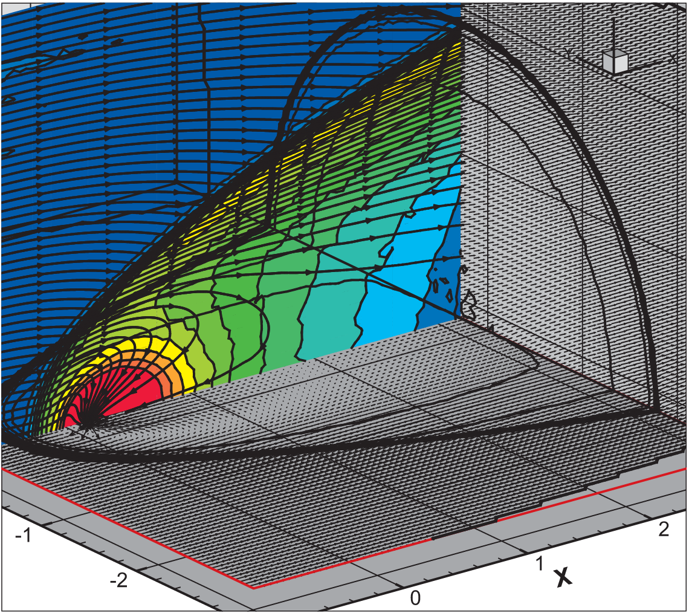

Mass transfer

I have been studying such processes both analytically (such as in this first explanation of barium stars), but also using extensive numerical simulations. I have used SPH to make studies of Bondi-Hoyle accretion in 2D and in 3D, as well as in binary systems, but also to study spiral shocks in three-dimensional accretion discs. I also helped develop a code in FORTRAN 90, GRADSPH.
Further studies were done with other kind of codes, to study Bondi-Hoyle accretion or spiral shocks
Most importantly, we have been doing a large set of simulations to estimate the mass accretion rate and the angular momentum loss in wind accretion in binary stars.
With my Japanese colleagues, we have also developed a new hydrodymical method, that we call Molecular Hydrodynamics: see here and here.